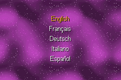

Dragon Ball Z - The Legacy of Goku II (Europe) (En,Fr,De,Es,It)
EEPROM 64K Save Format Spec
Cartridge Identity
- Game Code
ALFP(FamilyALF)- Header Title
DRAGONBALL Z- Maker / Revision
70/ rev0- ROM Size
- 8.0 MiB (8,388,608 B)
- Save Media
EEPROM 64K- SHA-256
a51382a23fbfba425074fc75821ac653b56134648c31ef80a26181e256a54925- Engine / SDK Group
comm-024(9 families)
Screenshots

Battery Save Format Specification
Open Full Save Format SpecDownload Sample .sav (8,192 B)Download save-format.json
- Specification Coverage
- 3 mapped fields · 0 verified checksum(s) · Confidence: LOW
- gbakit Built-In Support
- JSON schema download available
Observed Battery Save Layout
- Fill Byte & Active Size
0x00fill · 511–512 / 8,192 B active (entropy 0.00 bits/B)- Active Offset Ranges
0x0–0x1FF(1 total)- ASCII Magic / Headers
- None detected
- Observed Variable Regions
- 8 bytes across 1 spans:
0x0–0x7 - Candidate Checksum/Counter Spans
- None
Hardware MMIO Subsystems
ppu_display0x800c258,0x80211d6,0x80211f0
Regional Variants & Revisions (Family ALF)
- Dragon Ball Z - The Legacy of Goku II (USA) (
ALFE, 8 MiB) - Dragon Ball Z - The Legacy of Goku II International (Japan) (
ALFJ, 8 MiB)